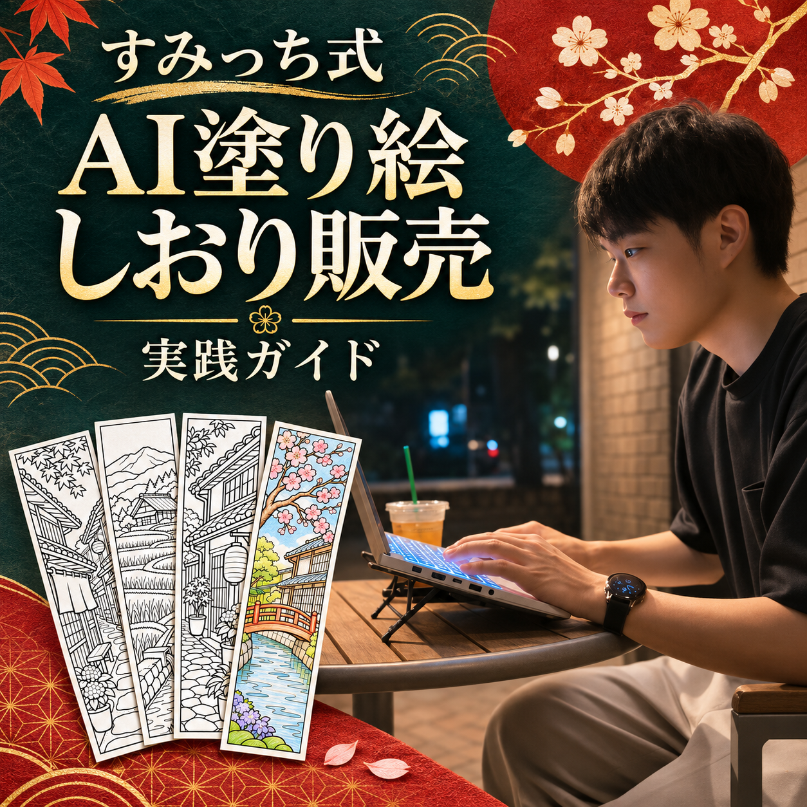
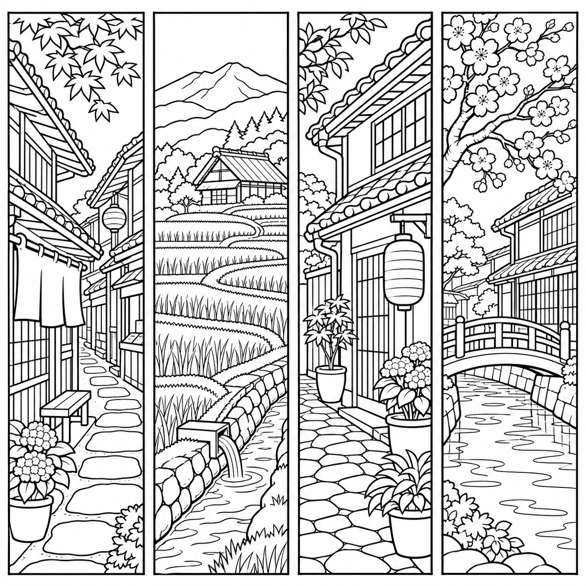
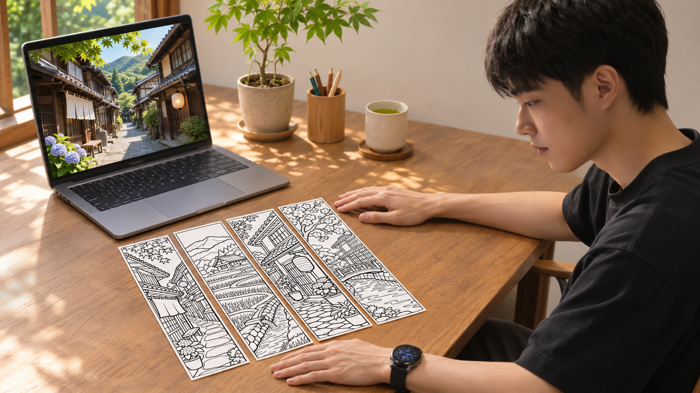
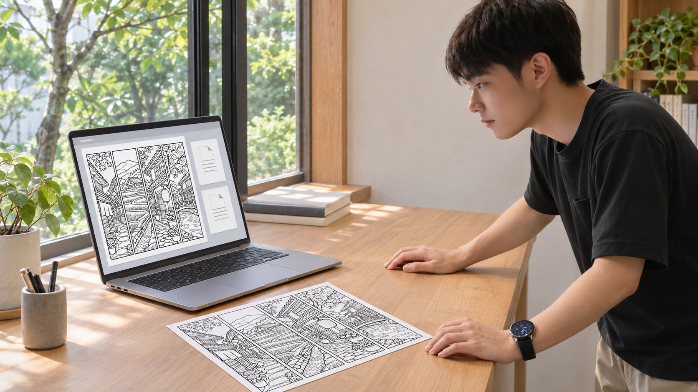

すみっち式 AI塗り絵しおり販売 実践ガイド

塗り絵しおりの完成見本

練習用の完成見本。印刷して塗り、外枠に沿って切るとしおりになります。
完成見本と手順をまとめて保存A4・US LetterのPDF、線画PNG、英語原稿、指示文、保存用ガイドが入っています。ZIPを展開し、最初に「はじめに.html」を開いてください。
風景を線画にする
僕が勧めているのは、AIに大きな質問を投げるより、商品になるものを一つ作る使い方。今回は、日本好きの海外の人に向けた塗り絵しおりに絞ります。
ChatGPTの入力欄へ、下の指示文を貼って送ります。画像が出たら開いて保存。スマホなら画像の保存メニュー、PCなら表示されるダウンロード操作を使います。
線画を作る指示文を開く
日本好きの海外の人に向けた、印刷できる大人向け塗り絵しおりの線画を生成してください。 【テーマ】日本の暮らしが見える風景 【4つの場面】古い商店街の路地／棚田と用水路／鉢植えのある家の軒先／桜と小さな運河 正方形の白い用紙の中へ、同じ幅の細長いしおり4本を横一列に配置。各しおりは縦横およそ4:1、四辺に細い黒の切り取り枠。枠の間と外側に白い余白を残す。 純白の背景、黒い輪郭線のみ。グレー、陰影、ベタ塗り、文字、ロゴ、人物は入れない。色鉛筆で塗れる閉じた面を多めにし、細かすぎる描き込みは避ける。 瓦屋根、木の格子、のれん、石畳、用水路など、場面に合う具体的な特徴を反映。実在の特定施設を忠実に再現したとは表示しない。 画像を実際に生成し、4本すべての外枠が切れず、図柄が別の枠に入り込んでいないことを確認してください。画像生成が使えない場合は、生成済みとせず必要な機能を教えてください。

日本好きの人へ向けるなら、瓦屋根や石畳、鉢植えなど、風景の具体性が題材になります。今回は「日本風」の一言で済ませず、商店街の路地を一つの柄に採りました。
自分の写真を使う場合
自分で撮った、または加工と商用利用の権利を確認できる写真を添付します。「この写真の瓦屋根と石畳を取り入れ、人物・看板文字・ロゴは省く」と伝えます。他人の商品画像やキャラクターを見本にして写さないようにしましょう。
この作例は日本の日常風景を題材にした創作です。特定の実在する街並みを正確に再現した商品としては案内しません。
塗れる線になっているかを見る
- 4本の外枠が全部見える
- 黒い塗りつぶしやグレーの影がない
- 細かすぎる所、途切れた線、建物の破綻がない
気になる場所を言葉で指定して、画像と一緒に送り直します。
線が細かすぎるときの修正指示
この画像の4場面、順番、白黒の線画、外枠は保ってください。 変更点：線が密集している植物と石畳だけを整理し、色鉛筆が入る大きな面にしてください。途切れた輪郭は閉じ、枠に触れている物は少し内側へ移動してください。文字・色・陰影は追加しないでください。 修正版を別の画像として生成してください。変更した場所を短く教えてください。
画像生成を使えないとき・保存の目印
利用できる機能や回数はアカウントにより異なります。画像ではなく説明文だけが返る場合は、「実際の画像を生成して」と伝え、画像生成が利用可能か確認します。
保存先に画像ファイルがあり、開くと4柄すべてを確認できれば次へ進めます。OpenAI公式：画像生成と修正
画像を、渡せるPDFにする
保存した画像をChatGPTへ添付し、下の指示文を送ります。できたPDFをそれぞれ保存し、開いて枠の切れと余白を見ます。
印刷用PDFを作る指示文を開く
添付の塗り絵画像を改変せず、印刷用PDFを2つ作ってください。 1. japan-bookmarks-A4.pdf：A4縦 2. japan-bookmarks-Letter.pdf：US Letter縦 画像は縦横比を保ち、中央へ幅180mm以下で配置。用紙端に最低10mmの余白を残し、4本の枠を切らない。画像の上下に短い英語の題名と、Print at 100% / Actual size. Color, then cut along the outer rectangles. の一文を置く。 実際にPDFファイルを保存し、両方を開いて、用紙サイズ、画像の切れ、にじみ、余白を確認してください。画像の解像度が足りない場合は販売用と断定せず教えてください。できない機能があれば代わりに手順を教えてください。
PDFを作れない場合・印刷で確認すること
画像だけ保存できた場合は、PCの文書作成ソフトでA4またはUS Letterの用紙を設定し、画像を縦横比固定で置いてPDF出力します。4本の外枠が用紙内に入る余白を確保してください。
販売前に、用紙サイズを合わせ「実際のサイズ／100%」で試し刷りをします。4本が切れず、線が薄すぎず、色鉛筆で塗れるかを確認。見本のPDFは練習用として使えます。販売用は自分の題材と指示で作り、印刷を確認しましょう。
英語の出品文を作る
A4 & US Letter
No physical item
AIで生成
人の役割
Japanese Townscape Coloring Bookmarks — 4 Designs, Printable A4 & US Letter PDF
僕は、絵だけでなく英語の商品名と説明文もAIに任せます。同じ画像とPDFを渡せば、何を売る商品かをそろえて頼めます。日本語の対訳も出して、中身と合っているか確かめましょう。
英語の商品名・説明文を作る指示文
添付の完成画像とPDFを確認して、Etsy用の英語の商品名、説明文、タグ候補、日本語の対訳を作ってください。 【商品】日本の日常風景の塗り絵しおり4柄 【場面】古い商店街の路地、棚田と用水路、鉢植えのある家の軒先、桜と小さな運河 【納品】A4・US LetterのPDF各1ファイル。各PDFに同じ4柄。デジタル商品のみ。実物発送なし。未着色。 【制作】私が題材と指示を決め、AIで生成し、内容と印刷用レイアウトを確認する。確認していない修正や手描き実績は書かない。 商品名は自然で具体的に、読者が内容を理解できる長さに。説明文は内容物、印刷・切り取りの使い方、実物発送なし、色の見え方や印刷結果は環境で変わること、AI使用の開示を含める。 タグは関係のある候補を最大13個、各20文字以内。売上、人気、レビュー、効果、手描き、実在の名所の忠実な再現など未確認の主張は禁止。 価格・利用許諾・返品条件は勝手に決めず【販売者が確認】と分ける。出品画面には投稿せず、確認用の原稿だけを返す。
確認する英語・自分で決める項目
「4柄なのに8柄」「未着色なのにcolored」「データなのに発送あり」になっていないか確認します。AI生成をhand-drawnと書かせず、自分がした工程だけを説明します。
販売価格、利用許諾（個人利用のみ等）、ショップの返品等の方針は自分で決め、原稿へ反映します。商品の権利や利用範囲を確認できないまま、商用利用可と書かないでください。
Etsyへ出品する
Etsyは海外の購入者へデザイン商品を販売できる場所。ショップ開設が済んだら、Shop Managerの「Listings」から出品を追加し、デジタル商品として入力します。
完成見本
タグ候補
PDF 2ファイル
項目の対応図です。実画面の表記や順序が異なる場合は、画面の案内を優先してください。
プレビューで、中身を照合する
- 添付PDFを開き、4柄と用紙サイズを確認
- 商品画像・英語説明・添付ファイルが同じ内容
- AI使用の説明と、データのみの表示がある
- 価格・手数料・利用許諾・ショップ条件を確認
問題がなければ、自分で「Publish」を押して公開します。練習中は下書きへ保存し、販売前に印刷結果も確認してください。
初めて開設する場合・費用・販売ルール
未開設の場合は、Etsyのショップ開設案内に沿って、居住国、受取方法、本人確認、請求情報などを設定します。表示される開設費用や利用条件を確認してから進めてください。公式の開設手順
| 出品料 | 1出品 US$0.20 |
| 取引手数料 | 注文金額の6.5% |
| 決済など | 国・条件により別途 |
出品料は売れなくてもかかります。自動更新、広告、為替等の費用も確認し、価格を決めます。Etsy公式：手数料
即時ダウンロードは最大5ファイル、各20MBまで。購入者に見えるファイル名を整えてから添付します。Etsy公式：デジタル商品の管理
自分が題材や指示を決めたAI作品は、説明文でAI使用を開示します。他人の商品をまとめ直したものやAIプロンプト集を、今回の商品として出さないようにしましょう。Etsy公式：制作基準
商品写真やプレビューは、購入者へ渡すファイルを正しく示すものに。イメージ画像だけで実際と違う商品に見せないよう確認します。Etsy公式：AI使用の更新案内
次の商品をまとめて作る

僕は、会社にいる間も進むようにChatGPTへ指示を出しています。まずは完成させた一商品の条件を引き継いで、次のテーマの画像・PDF・英語をまとめて頼むところから始めましょう。
次の商品をまとめて作る指示文
この会話で確認した仕様で、次の1商品を下書きとして作ってください。 【今回のテーマ】雨の日の日本の商店街 【場面】傘立てのある店先／水たまりと石畳／軒先の鉢植え／細い用水路 1. 4柄の塗り絵しおり画像を実際に生成する。白地、黒い輪郭線、文字なし、4本の枠を切らない。 2. A4・US Letterの印刷用PDFを保存する。画像の比率と余白を守る。 3. 実ファイルに一致する英語の商品名・説明文・タグ候補と日本語対訳を保存する。AI使用を開示し、未確認の実績や効果を書かない。 4. 線の密集、破綻、4柄とファイル数の一致、PDFの切れを確認し、問題があれば修正する。 5. 日付とテーマ名のフォルダへまとめ、作れたファイルと未確認事項を報告する。 Etsyへのログイン、アップロード、公開、価格変更、購入、外部送信、課金はしない。必要な機能がない場合は停止理由を教える。確認が必要な箇所を残し、私のレビューを待つ。
日時を決めて自動で繰り返すには
ChatGPT Workで画像生成とファイル保存を使える環境なら、まず上の指示を一度実行し、実物がそろうか確認します。機能の利用可否や上限はアカウントにより異なります。
一度成功した会話で、次の予約指示を送ります。実行日時・タイムゾーン・保存先を確認し、Scheduled（予定）に登録された内容を開いて見ます。ローカルのフォルダを使う予定は、PCの電源とアプリの起動を維持してください。
繰り返し予定を頼む指示文
今テストした「雨の日の日本の商店街」の下書き制作を、毎週土曜日の午前9時（日本時間）に繰り返す予定を作成してください。 毎回1商品まで。生成画像、A4・US LetterのPDF、英語原稿を同じ仕様で作り、日付ごとに分けて保存する。画像生成・ファイル保存が実行環境で使えるか確認し、使えなければ実行したと扱わず報告する。 商品公開、外部送信、課金は行わず、完成物と要確認箇所を私へ返す。 保存前に実行内容、日時、タイムゾーン、保存先を示し、作成後は保存された予定を確認させてください。
予定を登録しただけで画像生成・PDF保存まで成功したとは限りません。最初の実行結果でファイルを開き、制限やエラーがあれば予定を調整します。OpenAI公式：予定と実行結果の確認
自動化するのは確認前の制作。Etsyは人が関与しないボット出品を認めていないため、公開は自分で確認して行います。Etsy公式のAI案内
今日の一手は、1枚の線画から
まずは指示文の【テーマ】を一つ変え、4本が入った画像を保存してみてください。枠・線・塗る面を確認できたら、PDFと英語原稿へ進めます。
練習用の完成見本とガイドを保存AI副業の進め方も知る
しおりの作り方を試したら、次はAI副業をどう進めるか。全体の進め方を知りたい方へ、僕の公式LINEで「AIマネタイズの教科書」をお渡ししています。
 LINEで教科書を受け取る →
LINEで教科書を受け取る →